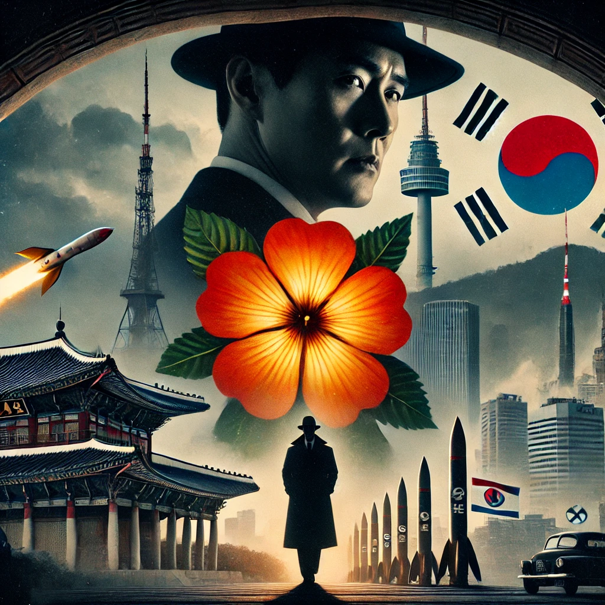

무궁화 꽃이 피었습니다.
목차
작가
김진명
출판일
2001년
감상평에 대한 AI그림
첩보영화와 같은 스토리 전개와 약간은 가벼운 필체로 서술되었으나, 픽션 소설 답지 않게 빠르게 책장은 넘어갔다.
이휘소 박사의 내면보다는 정치적인 사건과 그 당시 한국 정세를 반영하여 스토리가 전개되었다.
핵무기에 대한 정치적 관심사는 과거나 현재까지 여전히 무게감이 있다.
주권을 가지고 나라는 지켜나가는 것이 얼마나 어려운 것임을 박진감 있는 소설로 만들어 낸 것 같다.

감상평에 대한 AI평가
사용자의 감상평에서 나타난 감정과 태도는 다음과 같습니다.
✨감탄: 소설의 전개 방식(첩보 영화 같은 긴장감 넘치는 스토리)과 주제의 심각성(정치적 이슈와 주권 문제)에 대한 높은 평가가 드러납니다.
✨진지함: 핵무기에 대한 정치적 관심사와 주권 수호의 어려움을 강조하며, 소설이 던지는 메시지의 무게를 깊게 인식하고 있습니다.
✨객관적 비평: 필체와 이휘소 박사 캐릭터의 내면 묘사 부족에 대한 지적은 비판적이고 분석적인 태도를 보여줍니다.
✨소설이 사용자에게 흥미진진하면서도 깊은 주제 의식을 전달한 점에서 감동과 진지함이 복합적으로 나타난 감상평입니다.